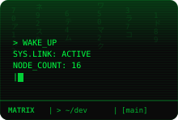
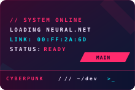
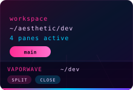
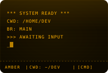
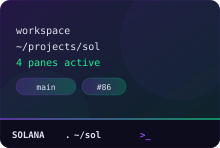
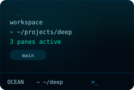
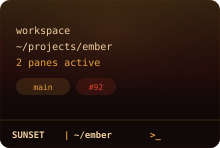
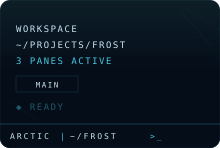

A terminal workspace manager that saves your multi-pane layouts so you stop rebuilding them every morning.
 Matrix |
 Cyberpunk |
 Vaporwave |
 Amber |
 Solana |
 Ocean |
 Sunset |
 Arctic |
Each theme comes with its own visual effects — scanlines, phosphor glow, noise textures, gradient overlays — applied to terminal backgrounds and pane chrome. These aren't just color swaps.
Grab the latest release from GitHub Releases:
.dmg (Apple Silicon).exe installerEvery project needs a different terminal setup — build watcher, dev server, logs, a shell for git. You arrange them, close the window, and rebuild the whole thing next time. knkode saves each arrangement as a named workspace you can switch between instantly.
Workspaces as tabs. Each workspace is a color-coded tab with its own split-pane layout. Create, duplicate, close, drag to reorder, or reopen from the closed-workspaces menu. Switching is instant — background shells stay alive.
Split panes. Six layout presets plus split any pane on the fly. Drag pane headers to rearrange — drop on center to swap, drop on an edge to insert. Move panes across workspaces via right-click.
16 themes. 8 identity themes with unique visual effects (Matrix, Cyberpunk, Vaporwave, Amber, Solana, Ocean, Sunset, Arctic) and 8 classics (Dracula, Tokyo Night, Nord, Catppuccin, Gruvbox, Monokai, Everforest, Default Dark). Each has custom status bar chrome — parallelogram badges, CRT scanlines, gradient borders, retro grids. Status bar position (top or bottom) is configurable per workspace. Applied per-workspace, with per-pane color overrides.
Terminal. WebGL-rendered via xterm.js. In-terminal search, clickable URLs, CWD tracking in pane headers, per-pane startup commands. Shift+Enter sends LF instead of CR for tools like Claude Code.
Quick commands. Define reusable shell snippets per workspace. Run them from the >_ icon on any pane header.
Persistent. Config stored as JSON in ~/.knkode/. Atomic writes (temp + rename) so crashes don't corrupt state.
Cmd on macOS, Ctrl on Windows. Avoids terminal sequences (Ctrl+C, Ctrl+D).
| Action | macOS | Windows |
|---|---|---|
| Split side-by-side | Cmd+D | Ctrl+D |
| Split stacked | Cmd+Shift+D | Ctrl+Shift+D |
| Close pane | Cmd+W | Ctrl+W |
| Close workspace tab | Cmd+Shift+W | Ctrl+Shift+W |
| New workspace | Cmd+T | Ctrl+T |
| Prev / next workspace | Cmd+Shift+[ / ] | Ctrl+Shift+[ / ] |
| Prev / next pane | Cmd+Alt+Left / Right | Ctrl+Alt+Left / Right |
| Focus pane by number | Cmd+1-9 | Ctrl+1-9 |
| Find in terminal | Cmd+F | Ctrl+F |
| Settings | Cmd+, | Ctrl+, |
Requires Node.js >= 18 and bun.
git clone https://github.com/StanK23/knkode.git
cd knkode
bun install
bun run devOpens the app with hot reload. macOS uses a frameless window with native traffic lights; Windows uses the standard title bar.
bun run test # vitest
bun run lint # biome check
bun run build # compile to out/
bun run package # build + create .dmg / .exeStack: Electron 33, React 19, TypeScript, Zustand 5, xterm.js + node-pty, allotment, Tailwind CSS 4, electron-vite, Biome.